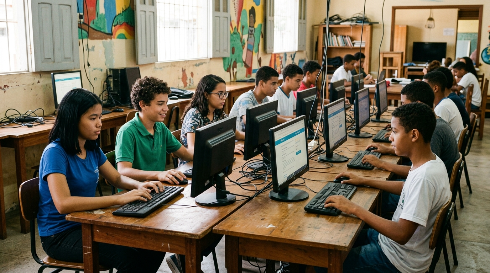

Infraestrutura
Iniciativa 01
Polos Digitais Comunitários
Muitas comunidades e escolas públicas contam com espaços ociosos por falta de computadores operacionais. A Conecta+ estrutura esses ambientes com máquinas recuperadas, redes seguras de internet e mobiliário adequado.
- ✔ Acesso gratuito a computadores conectados para estudantes do bairro
- ✔ Monitores voluntários para suporte a pesquisas e tarefas escolares
- ✔ Espaço aberto para estudos extracurriculares e cursos profissionalizantes